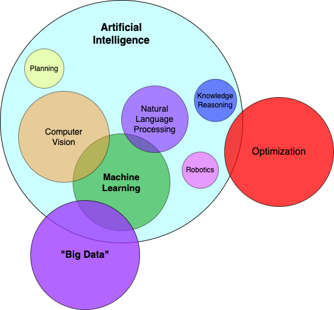

“AI” vs “ML” vs “Big Data”
This article is the first in a string of articles with a different focus than security. With the frequency these terms appear on the internet, you’d think there would be a consensus. I offer here a set of definitions that follow the consensus that does exist, so you can navigate past marketing and know what these words (should) mean.
Estimated read time: 6.0 minutes
What is AI?
“AI” or Artificial Intelligence has become a broad term despite its relatively simple and humble beginnings. The field of AI research began in the 1950’s at Dartmouth, a time when computers took up rooms and huge amounts of power. AI is simple to define:
Artificial Intelligence is the ability for a machine to acquire, understand, and use knowledge.
It stems from the term “Natural Intelligence”, the ability that many living animals possess to acquire, understand, and use knowledge. AI is just the synthetic corollary. There is no requirement for how much understanding or how much knowledge is at play. Butterflies, for example, exhibit intelligence by knowing which flowers to land on, and how to fly in a way to avoid predators. Dolphins are also intelligent and may possess other abilities, but it would be hard to argue that only the dolphin possesses intelligence.
It is the same with AI. A computer that detects when to deploy an airbag in your car balances the risk and cost of deploying the airbag with the risk and cost of not deploying it at every moment you drive. The airbag problem is one of the early uses of small computers to solve an AI problem.
In short, all an AI system has to possess is an ability to do something smart. It does not have to be “smart”.
The field of AI is actively researched and has many subcomponents: Computer Vision, Machine Learning, Robotics, Natural Language Processing, General Artificial Intelligence, etc.
What is ML?
“ML” / Machine Learning is a subset of principles in the realm of AI. As opposed to AI, Machine Learning has a more specific and accepted definition. This is my concise definition of ML:
Machine Learning is when a machine system teaches itself knowledge.
In a nutshell, ML is when a computer figures out something smart on its own. This is a significant leap from AI, because it removes the step of humans teaching the machine the intelligence. Typically, the human specifies the what the system knows in an AI but non-ML application, but defines the how the machine learns that information in an ML application.
For an example, let us consider finding outliers in a dataset. This may be useful for fraud detection, or malicious user detection. A strictly AI solution would probably require a large set of rules and statistical models to ascertain whether any data point (transaction, software process, etc) is an anomaly. In security think about having to keep your anti-virus up to date. Before the broad application of ML to antivirus software, vendors had to maintain a huge list of bad programs and tell your computer which ones to look out for (skipping over some stuff here, but that’s the essence of it).
Now on the ML side: To find malicious software we can start with some known good and known malcious software. We can feed them without much else to a ML algorithm and the algorithm itself will determine which aspects are most noteworthy. For instance, the algorithm could decide that software downloaded from a specific website or that software downloaded at certain times of day are much more likely to be malicious and flag those applications all on its own. Some ML models are so complex that they are nigh indecipherable on how they figure out the rules as well, so these models can end up with highly robust, complex models to find things in large datasets that humans simply cannot find on their own.
In short, for AI the human developers had to know the rules up front and define them. For ML, the computer determined those rules themselves.
We will go into more detail about ML in future installments.
What is big data?
Big data is a relatively newer term referring to having datasets larger than previously thought possible. A volume of data so large that it is no longer possible to have a single machine do normal calculations on them in the standard ways.
Big data is when the amount of data exceeds the capacity of single machines and requires deliberate approaches for processing.
When the data is too big for you or your organization to adequately deal with on single computers, it has become big data. This means that big data may mean 100GB of data to one company, but 100TB to another.
For instance, anyone can average together a few thousand rows in excel. It starts to get complicated when you have so many rows of data that you can no longer fit that file on your computer, such as files with billions of rows. This is even more pronounced when the amount of data can’t fit into any single computer (or server).
Another aspect of big data can be simply the speed at which it is arriving. It isn’t terribly hard to process invoices or ship products when they come in at a few orders per hour, but imagine trying to handle millions of orders per second!
Big data is itself a problem (and a blessing). The methods we can use to handle and deal with big data are infrastructural technologies. Some examples are the Map-Reduce framework, or decentralized data stores. As with all things of extreme scale, utilizing big data has it’s own set of complexities. We will discuss some of these complexities and trade-offs in future articles.
Big data relates to AI and ML in an important way. Often, it is important to have large volumes of data used for training ML models. With large data, analysts simply have a better chance of gaining new insights or understandings of the population they are serving.
How do these fit together?
This digram shows the intersection of AI, ML, big data, and some other commonly related terms.

Not all terms are included, but you can see the hierarchy between AI and ML, as well as what things use big data. In general, the lower in the hierarchy (i.e. circle inside of circles) the more precise a term means.
This should also help with understanding the AI banner being almost always just a catch-all term. All ML is AI, but not all AI is ML.
Conclusion
Hopefully this provides a bit more understanding to the often said terms around AI and ML. AI is where computers do things “smartly”, ML is where they figure ou t that “smartness” on their own, and big data is when the scale of data is extre me.
For further understanding, read the introductory chapters of the authoritative textbook on AI: Artificial Intelligence: A Modern Approach by Stuart Russel and Peter Norvig.